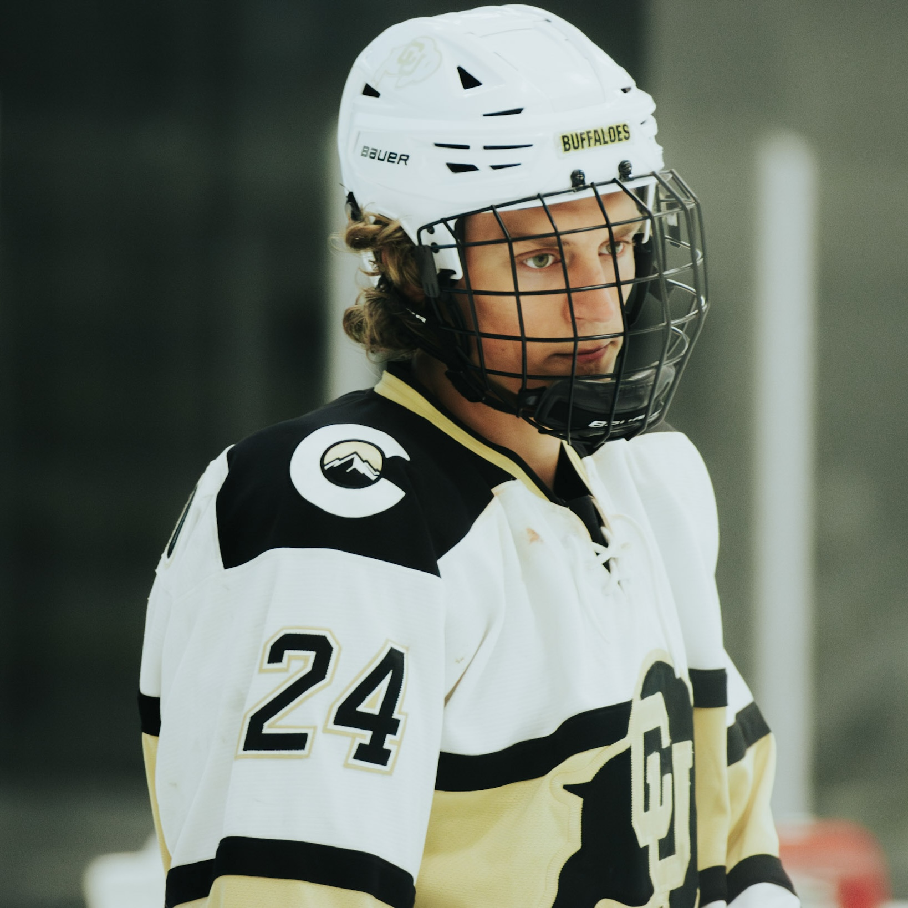

Roman Di Domizio

I'm a recent Computer Science graduate from the University of Colorado Boulder, driven by a deep passion for technology and innovation, especially within the realm of Artificial Intelligence. My fascination with AI isn't just academic; it's about its transformative power. I'm particularly excited by AI's potential to automate complex processes, enhance well-being and daily living, and create immersive entertainment experiences, including in gaming. My current work and projects are centered around exploring these frontiers.
To further deepen my expertise, I'm thrilled to be starting a fully remote Master of Science in Artificial Intelligence at CU Boulder this fall, with an expected graduation in May 2027. This program's flexibility is ideal as it allows me to pursue full-time opportunities concurrently. Alongside my AI studies, I'm also pursuing a Graduate Certificate in Engineering Management, focusing on electives in leadership, product strategy, and systems thinking. This dual focus is preparing me to not only build cutting-edge AI solutions but also to lead them effectively.
I am actively seeking Technical Product Manager roles where I can leverage my technical skills and growing strategic acumen to drive impactful AI initiatives.
While at CU, I also balanced my studies playing ACHA D1 hockey. Outside of tech, you can find me on the ice, snowboarding, hiking, biking, or at the gym.
To further deepen my expertise, I'm thrilled to be starting a fully remote Master of Science in Artificial Intelligence at CU Boulder this fall, with an expected graduation in May 2027. This program's flexibility is ideal as it allows me to pursue full-time opportunities concurrently. Alongside my AI studies, I'm also pursuing a Graduate Certificate in Engineering Management, focusing on electives in leadership, product strategy, and systems thinking. This dual focus is preparing me to not only build cutting-edge AI solutions but also to lead them effectively.
I am actively seeking Technical Product Manager roles where I can leverage my technical skills and growing strategic acumen to drive impactful AI initiatives.
While at CU, I also balanced my studies playing ACHA D1 hockey. Outside of tech, you can find me on the ice, snowboarding, hiking, biking, or at the gym.
